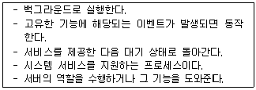
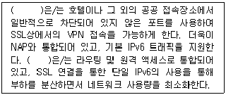

네트워크관리사-2급 (2017-04-23 기출문제)
1과목: TCP/IP
1. '10.0.0.0/8' 인 네트워크에서 115개의 서브넷을 만들기 위해 필요한 서브넷 마스크는?
- 255.0.0.0
- 255.128.0.0
- 255.224.0.0
- 255.254.0.0
(정답률: 65%)

2. 'xxx.yyy.zzz' 서버에 접속하기 위해 'telnet xxx.yyy.zzz:5555'를 입력했다. 여기서 '5555'의 의미는?
- 포트 번호
- 사용자 번호
- 이더넷 주소
- IP Address
(정답률: 89%)
3. TCP/IP에 대한 설명으로 옳지 않은 것은?
- TCP는 연결형 프로토콜로 전송한 데이터의 응답을 받아가며 전송한다.
- UDP는 TCP에 비해 안정성 면에서는 떨어지지만 속도는 빠르다.
- UDP는 데이터가 제대로 도착했는지의 유무를 확인할 수는 있지만 잘못 전송되었을 경우 복구할 수는 없다.
- TCP는 송신자의 정보를 분할하여 각 패킷별로 순서에 따라 번호를 부여한다.
(정답률: 79%)
4. 패킷이 라우팅 되는 경로의 추적에 사용되는 유틸리티로, 목적지 경로까지 각 경유지의 응답속도를 확인할 수 있는 것은?
- ipconfig
- route
- tracert
- netstat
(정답률: 86%)
5. IP Address 중 Class가 다른 주소는?
- 191.234.149.32
- 198.236.115.33
- 222.236.138.34
- 195.236.126.35
(정답률: 88%)
6. TCP/IP 모델에서 TCP(Transmission Control Protocol)가 동작되는 계층은?(오류 신고가 접수된 문제입니다. 반드시 정답과 해설을 확인하시기 바랍니다.)
- 응용 계층
- 전송 계층
- 인터넷 계층
- 네트워크 접속 계층
(정답률: 81%)
7. SNMP에 대한 설명으로 옳지 않은 것은?
- TCP를 이용하여 신뢰성 있는 통신을 한다.
- 네트워크 관리를 위한 표준 프로토콜이다.
- 응용 계층 프로토콜이다.
- RFC 1157에 규정 되어 있다.
(정답률: 60%)
8. 서브넷 마스크에 대한 설명으로 옳지 않은 것은?
- A Class는 기본 서브넷 마스크로 '255.0.0.0'을 이용한다.
- B Class에서 두 개의 네트워크로 나누고자 한다면, 실제 서브넷 마스크는 '255.255.128.0'이 된다.
- C Class는 기본 서브넷 마스크로 '255.255.255.0'을 이용한다.
- C Class에서 다섯 개의 네트워크로 나누고자 한다면, 실제 서브넷 마스크는 '255.255.224.0'이 된다.
(정답률: 67%)
9. TCP 헤더에는 수신측 버퍼의 크기에 맞춰 송신측에서 데이터의 크기를 적절하게 조절할 수 있게 해주는 필드가 있다. 이 필드를 이용한 흐름 제어 기법은?
- Sliding Window
- Stop and Wait
- Xon/Xoff
- CTS/RTS
(정답률: 87%)
10. IP 데이터그램이 세 개의 데이터그램으로 분할(Fragmentation)되는 경우 다음 중 옳은 것은?
- 세 개의 데이터그램 모두 'Do Not Fragment' 비트가 1로 설정된다.
- 세 개의 데이터그램 모두 'More Fragment' 비트가 1로 설정된다.
- 세 개의 데이터그램 모두 동일한 'Identification' 값을 갖는다.
- 세 개의 데이터그램 모두 동일한 'Offset' 값을 갖는다.
(정답률: 65%)
11. IPv6에 대한 설명으로 올바른 것은?
- IETF(Internet Engineering Task Force)에서 IP Address 부족에 대한 해결 방안으로 만들었다.
- IPv6 보다는 IPv4가 더 다양한 옵션 설정이 가능하다.
- 주소 유형은 유니캐스트, 멀티캐스트, 브로드캐스트 3가지이다.
- Broadcasting 기능을 제공한다.
(정답률: 78%)
12. 브로드캐스트(Broadcast)에 대한 설명 중 올바른 것은?
- 어떤 특정 네트워크에 속한 모든 노드에 대하여 데이터 수신을 지시할 때 사용한다.
- 단일 호스트에 할당이 가능하다.
- 서브네트워크로 분할할 때 이용된다.
- 호스트의 Bit가 전부 '0'일 경우이다.
(정답률: 77%)
13. IP 헤더에 포함이 되지 않는 필드는?
- ACK
- Version
- Header checksum
- Header length
(정답률: 77%)
14. SSH는 포트포워딩(Port Forwarding) 기능을 제공한다. 이 기능을 사용함으로써 얻을 수 있는 장점은?
- 통신비용의 절감
- 암호화를 지원하지 않는 프로그램의 안전한 사용
- 선택적인 데이터 압축으로 전송 속도 향상
- 사용자의 자동 인증
(정답률: 73%)
15. 인터넷에서 멀티캐스트를 위하여 사용되는 프로토콜은?
- IGMP
- ICMP
- SMTP
- DNS
(정답률: 85%)
16. ICMP의 Message Type필드의 유형과 질의 메시지 내용을 나타낸 것이다. 타입에 대한 설명으로 옳지 않은 것은?
- 3 - Echo Request 질의 메시지에 응답하는데 사용된다.
- 4 - 흐름제어 및 폭주제어를 위해 사용된다.
- 5 - 대체경로(Redirect)를 알리기 위해 라우터에 사용한다.
- 17 - Address Mask Request 장비의 서브넷 마스크를 요구하는데 사용된다.
(정답률: 63%)
17. ARP와 RARP에 대한 설명으로 옳지 않은 것은?
- RARP는 브로드캐스팅을 통해 해당 네트워크 주소에 대응하는 하드웨어의 물리적 주소를 얻는다.
- RARP는 로컬 디스크가 없는 네트워크 상에 연결된 시스템에도 사용된다.
- ARP를 이용하여 중복된 IP Address 할당을 찾아낸다.
- ARP와 RARP는 IP Address와 Ethernet 주소를 Mapping하는데 관여한다.
(정답률: 59%)
2과목: 네트워크 일반
18. ARQ 중 에러가 발생한 블록 이후의 모든 블록을 재전송하는 방식은?
- Go-Back-N ARQ
- Stop-and-Wait ARQ
- Selective ARQ
- Adaptive ARQ
(정답률: 84%)
19. PCM 방식에서 아날로그 신호의 디지털 신호 생성 과정으로 올바른 것은?
- 아날로그신호 - 표본화 - 부호화 - 양자화 - 디지털신호
- 아날로그신호 - 표본화 - 양자화 - 부호화 - 디지털신호
- 아날로그신호 - 양자화 - 표본화 - 부호화 - 디지털신호
- 아날로그신호 - 양자화 - 부호화 - 표본화 - 디지털신호
(정답률: 87%)
20. 다중화(Multiplexing)의 장점으로 옳지 않은 것은?
- 전송 효율 극대화
- 전송설비 투자비용 절감
- 통신 회선설비의 단순화
- 신호처리의 단순화
(정답률: 65%)
21. 성형 토폴로지의 특징으로 옳지 않은 것은?
- 중앙 제어 노드가 통신상의 모든 제어를 관리한다.
- 설치가 용이하나 비용이 많이 든다.
- 중앙 제어노드 작동불능 시 전체 네트워크가 정지한다.
- 모든 장치를 직접 쌍으로 연결할 수 있다.
(정답률: 69%)
22. 광통신 전송로의 특징으로 옳지 않은 것은?
- 긴 중계기 간격
- 대용량 전송
- 비전도성
- 협대역
(정답률: 72%)
23. 베이스밴드(Baseband) 시스템보다 브로드밴드(Broadband) 시스템이 더 많은 데이터를 전송할 수 있는 이유는?
- 여러 개의 주파수로 여러 개의 채널에 접근할 수 있기 때문
- 양방향 신호흐름을 지원할 수 있기 때문
- 서버에 데이터를 저장하였다가 한 번에 데이터를 전송할 수 있기 때문
- 한 번에 한 개의 신호 또는 한 개의 채널을 전송할 수 있기 때문
(정답률: 69%)
24. 인접한 개방 시스템 사이의 확실한 데이터 전송 및 전송 에러제어 기능을 갖고 접속된 기기 사이의 통신을 관리하고, 신뢰도가 낮은 전송로를 신뢰도가 높은 전송로로 바꾸는데 사용되는 계층은?
- 물리 계층(Physical Layer)
- 네트워크 계층(Network Layer)
- 전송 계층(Transport Layer)
- 데이터링크 계층(Datalink Layer)
(정답률: 63%)
25. 세션계층에서 제공하는 기능은?
- 대화 제어
- 데이터 변환
- 데이터 압축
- 암호화
(정답률: 62%)
26. Token Ring이 사용하는 디지털 신호 코딩은?
- Manchester
- Differential Manchester
- NRZ(Non Return to Zero)
- RZ(Return to Zero)
(정답률: 55%)
27. 무선랜의 구성방식 중 무선 랜카드를 가진 무선을 지원하는 기기(스마트폰, 태블릿 등)가 무선공유기를 통하지 않고 기기끼리 wifi를 연결하는 방식은?
- 4G
- AD HOC
- LTE
- infrastructure
(정답률: 72%)
3과목: NOS
28. SOA 레코드의 설정 값에 대한 설명으로 옳지 않은 것은?
- 주 서버 : 주 영역 서버의 도메인 주소를 입력한다.
- 책임자 : 책임자의 주소 및 전화번호를 입력한다.
- 최소 TTL : 각 레코드의 기본 Cache 시간을 지정한다.
- 새로 고침 간격 : 주 서버와 보조 서버간의 통신이 두절되었을 때 다시 통신할 시간 간격을 설정한다.
(정답률: 79%)
29. Windows Server 2008 R2에서 'www.icqa.or.kr'의 IP Address를 얻기 위한 콘솔 명령어는?
- ipconfig www.icqa.or.kr
- netstat www.icqa.or.kr
- find www.icqa.or.kr
- nslookup www.icqa.or.kr
(정답률: 75%)
30. 다음 설명에 해당하는 프로세스는?

- shell
- kernel
- program
- daemon
(정답률: 74%)
31. Linux 시스템의 기본 디렉터리에 대한 설명으로 옳지 않은 것은?
- /etc : 시스템 설정과 관련된 파일이 저장된다.
- /dev : 시스템의 각종 디바이스에 대한 드라이버들이 저장된다.
- /var : 시스템에 대한 로그와 큐가 쌓인다.
- /usr : 각 유저의 홈 디렉터리가 위치한다.
(정답률: 76%)
32. 아파치 서버의 설정파일인 'httpd.conf'의 항목에 대한 설명으로 옳지 않은 것은?
- KeepAlive On : HTTP에 대한 접속을 끊지 않고 유지한다.
- StartServers 5 : 웹서버가 시작할 때 다섯 번째 서버를 실행 시킨다.
- MaxClients 150 : 한 번에 접근 가능한 클라이언트의 개수는 150개 이다.
- Port 80 : 웹서버의 접속 포트 번호는 80번이다.
(정답률: 72%)
33. Linux 시스템에서 '-rwxr-xr-x'와 같은 퍼미션을 나타내는 숫자는?
- 755
- 777
- 766
- 764
(정답률: 86%)
34. Linux에서 주어진 명령어의 도움말(매뉴얼)을 출력하기 위해 사용되는 명령어는?
- ps
- fine
- man
- ls
(정답률: 84%)
35. 삼바(SAMBA)의 기능에 대한 설명으로 옳지 않은 것은?
- 삼바(SAMBA) 설치는 RPM으로 설치할 수 있다.
- MS Windows 계열 운영체제가 설치된 컴퓨터에 연결된 프린터를 공유하여 사용할 수 있다.
- MS Windows 계열 운영체제가 설치된 컴퓨터에 있는 파일을 공유할 수 있다.
- 네트워크를 통해 Linux의 NTFS 파일 시스템을 연결할 목적으로 개발되었다.
(정답률: 60%)
36. 다음 중 named.conf 파일에서 네임서버에 질의할 수 있는 호스트를 지정할 때 사용하는 항목으로 올바른 것은?
- allow-query
- allow-transfer
- forwarders
- memstatistics-file
(정답률: 75%)
37. Windows Server 2008 R2에서 자신의 네트워크 안에 있는 클라이언트 컴퓨터가 부팅될 때 자동으로 IP 주소를 할당해주는 서버는?
- DHCP 서버
- WINS 서버
- DNS 서버
- 터미널 서버
(정답률: 83%)
38. Windows Server 2008 R2에서 보안 감사 정책 중 감사항목과 설명으로 옳지 않은 것은?
- 정책변경: 사용자 계정 또는 그룹의 생성, 변경, 삭제, 암호의 설정 및 변경 등의 이벤트 성공/실패 로그를 기록
- 권한 사용: 권한 사용의 성공 및 실패를 감사할 경우 사용자 권한을 이용하려고 할 때마다 이벤트 생성
- 로그온 이벤트: 로컬 계정에 대한 로그온/오프 성공/실패에 대한 이벤트를 기록할지를 결정
- 시스템 이벤트: 시스템 시작 또는 종료, 보안 로그에 영향을 미치는 이벤트 등을 감사할지 여부를 결정
(정답률: 55%)
39. Windows Server 2008 R2 DNS 서버에서 정방향/역방향 조회 영역(Public/Inverse Domain Zone)에 대한 설명으로 올바른 것은?
- 정방향 조회 영역은 도메인 주소를 IP 주소로 변환하는 영역
- 정방향 조회 영역에서 이름은 'x.x.x.in-addr.arpa'의 형식으로 구성되는데, 'x.x.x'는 IP 주소 범위
- 역방향 조회 영역은 도메인 주소를 IP 주소로 변환하는 영역
- 역방향 조회 영역은 외부 질의에 대해 어떤 IP주소를 응답할 것인가를 설정
(정답률: 71%)
40. Windows Server 2008 R2에서 EFS(Encrypting File System) 대한 설명으로 옳지 않은 것은?
- 파일을 암호화하기 위해서는 지정된 파일에 대한 '파일 속성' 중 '고급'을 선택하여 '데이터 보호를 위한 내용을 암호화' 선택한다.
- 파일 암호화 키가 없는 경우 암호화된 파일의 이름을 변경할 수 없고 내용도 볼 수 없다. 하지만 파일 복사는 가능하다.
- 백업된 파일 암호화 키가 있는 경우 인증서 관리자(certmgr.msc)를 통해 인증서 키를 '가져오기'하여 암호화된 파일을 열수 있다.
- 파일 암호화 키 백업을 하여 암호화된 파일에 영구적으로 액세스하지 못하게 되는 것을 방지 할 수 있다. 암호화 키 백업은 주로 다른 컴퓨터나 USB 메모리 등의 별도로 저장할 것을 권장한다.
(정답률: 73%)
41. Windows Server 2008 R2에서 컴퓨터가 재시작되거나 종료될 때, 또는 보안에 영향을 주는 기타 이벤트가 발행할 때 감사할지 여부를 결정하는 감사 항목은?
- 시스템 이벤트 감사
- 로그온 이벤트 감사
- 권한 사용 감사
- 개체 액세스 감사
(정답률: 65%)
42. Windows Server 2008 R2는 이벤트 뷰어를 통하여 시스템을 모니터링한다. 다음 중 이벤트 뷰어의 이벤트 수준에 관한 설명으로 옳지 않은 것은?
- 정보 - 발생한 변경사항을 의미하는데 사용되거나 동작이 성공적으로 완료된 것을 표시할 때 사용된다.
- 위험 - 응용프로그램이나 컴포넌트에 영향을 줄 수도 있는 외부 문제를 의미한다.
- 경고 - 앞으로 문제가 될 수도 있는 이벤트를 의미하는 것으로 반드시 위험한 것은 아니다.
- 상세 - 상세로그는 로그엔트리에 대한 상세한 내용을 제공한다. 로그 엔트리가 상세 기록을 지원한다면 확인란이 선택될 때 기록된다.
(정답률: 52%)
43. Active Directory 도메인 내에서 사용되는 주요 인증 메커니즘으로 사용자와 네트워크 서비스의 신분을 검증하기 위해 티켓을 사용하는 정책은?
- PKI
- X.509
- Kerberos
- Secure Socket Layer
(정답률: 69%)
44. 다음 중 ( )에 알맞은 것은?

- RADIUS
- PPTP
- L2TP
- SSTP
(정답률: 73%)
45. Windows Server 2008 R2의 DNS Server 역할에서 지원하는 레코드의 형식과 기능의 설명이다. 이 중 잘못 연결된 것은?
- A - 정규화 된 도메인 이름을 32비트 IPv4 주소와 연결
- AAAA - 정규화 된 도메인 이름을 128비트 IPv6 주소와 연결
- CNAME - 실제 도메인 이름과 연결되는 가상 도메인 이름
- NS - 주어진 사서함에 도달 할 수 있는 라우팅 정보를 제공
(정답률: 64%)
4과목: 네트워크 운용기기
46. OSPF에 관한 설명으로 옳지 않은 것은?
- IP의 서비스를 받는다.
- 프로토콜 Number는 89번을 사용한다.
- 물리적인 네트워크 토폴로지에 따라 네트워크 타입을 규정하고 있다.
- Distance Vector 라우팅 프로토콜이다.
(정답률: 49%)
47. RAID의 구성에서 미러링모드 구성이라고도 하며 디스크에 있는 모든 데이터는 동시에 다른 디스크에도 백업되어 하나의 디스크가 손상되어도 다른 디스크의 데이터를 사용할 수 있게 한 RAID 구성은?
- RAID 0
- RAID 1
- RAID 2
- RAID 3
(정답률: 85%)
48. 스위치에서 발생하는 루핑(Looping)에 대한 설명으로 옳지 않은 것은?
- 동일한 목적지에 대해 두 개 이상의 경로가 있을 때 발생한다.
- 브로드 캐스트 패킷에 의해 발생한다.
- 필터링 기능 때문에 발생한다.
- 스패닝 트리 프로토콜을 이용해서 루핑을 방지해줄 수 있다.
(정답률: 64%)
49. 네트워크 보안 장비 중 네트워크 침입 시도의 흔적을 찾거나 네트워크 장비의 사용을 감시하는 용도로 사용되는 보안 장비는?
- 침입탐지/방지시스템(IDS/IPS)
- 방화벽(Firewall)
- 네트워크관리시스템(NMS)
- 가상사설망시스템(VPN)
(정답률: 73%)
50. 스위칭 허브(Switch Hub)에 대한 설명으로 옳지 않은 것은?
- 리피터 회로가 내장되어 메모리는 각 포트 단위로 연결된 노드 주소를 기억
- 프로세서는 전송패킷의 목적지 주소를 읽고, 패킷이 정해진 목적 포트로만 전송
- 노드간 충돌이나 연결된 노드의 고장으로 과도한 트래픽이 발생하면 전체 노드에 영향을 미침
- 포트당 속도가 일정하며, 패킷 충돌이 없어 효율을 높일 수 있음
(정답률: 67%)